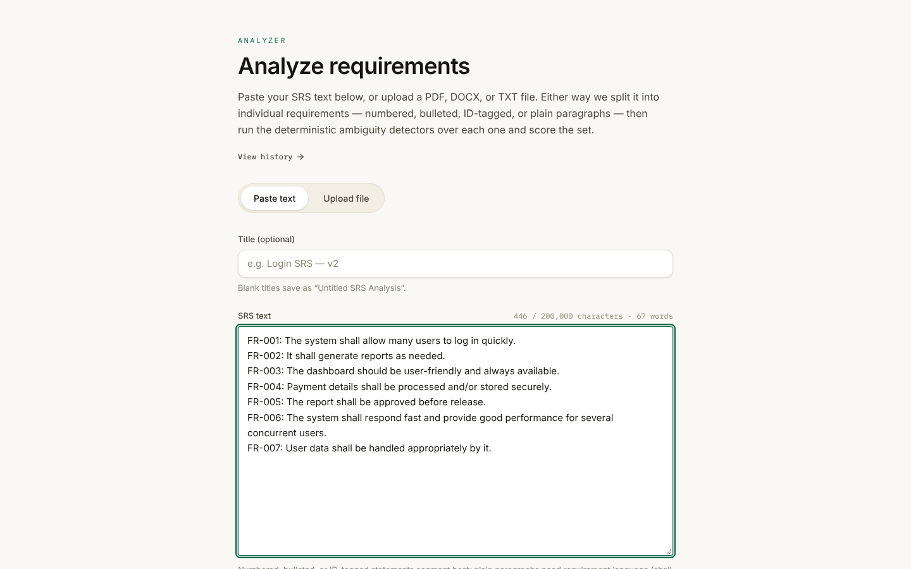
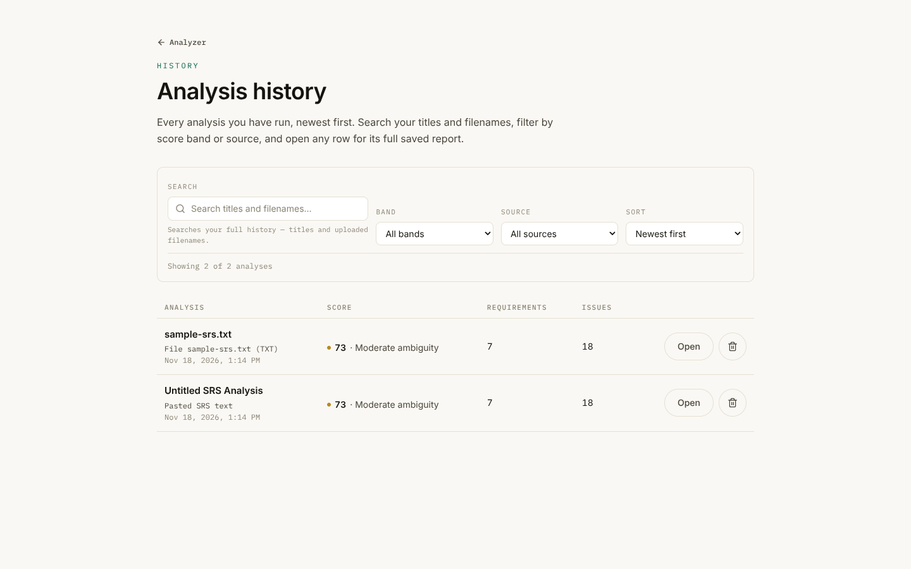
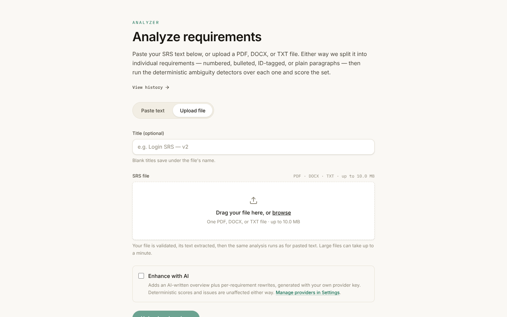
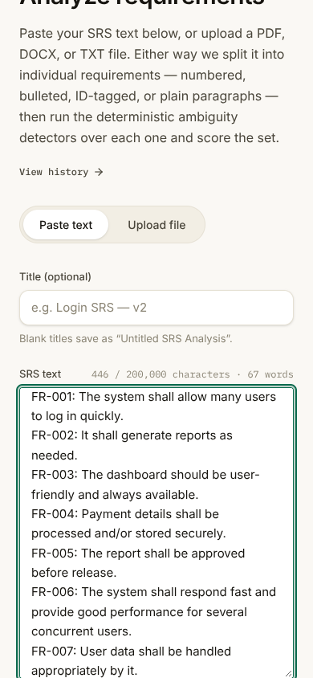

Figure 9.1: Public home page of SRS Ambiguity Detector
The system was developed incrementally, module by module, under Git version control, with automated tests written alongside each module and the full test suites executed before the work was accepted as complete. Approximately 45,000 lines of code, including automated tests, were produced. The technology stack is summarised below.
| Layer | Technologies Used |
|---|---|
| Front end | Next.js (App Router), React, TypeScript, Tailwind CSS, Recharts for charts, Motion for interface animation, Lucide icons |
| Back end | Python 3.11, FastAPI, Pydantic v2, Uvicorn ASGI server |
| Database access | SQLAlchemy 2.0 (async) with asyncpg driver; Alembic migrations |
| Database | PostgreSQL 16 (local server for development; managed PostgreSQL in production) |
| Security libraries | Argon2id password hashing, JSON Web Tokens (HS256), Fernet symmetric encryption for the credential vault, Cloudflare Turnstile CAPTCHA |
| Document processing | pypdf for PDF extraction, python-docx for DOCX extraction, multipart upload handling |
| Email service abstraction with a production mail adapter and a local console/file outbox for development | |
| Testing | pytest (back end, 591 tests against a real PostgreSQL), Vitest with Testing Library (front end, 432 tests) |
| Monitoring | Sentry error tracking with aggressive scrubbing of secrets and document content; structured request logging with request identifiers |
The detection engine is implemented as a registry of eleven independent detector functions. Each detector receives one requirement at a time and returns findings containing the detector identifier, category, severity, matched phrase, character offsets within the requirement, reason and recommendation. Because detectors are independent, a new category can be added by registering one more function without disturbing existing behaviour.
| Detector | What It Detects | Example (flagged phrase in quotes) |
|---|---|---|
| vague-quantifier | Quantity words such as “some”, “many”, “few”, “several” | “The system shall support several users.” |
| subjective-term | Subjective quality words such as “fast”, “quickly”, “easy”, “user-friendly”, “robust” | “The system shall respond quickly.” |
| missing-measurable-criteria | Performance or quality claims carrying no measurable criterion | “The system shall load reports efficiently.” |
| pronoun-reference | Pronouns or demonstratives whose referent may be unclear | “When the service receives a request, it validates it.” |
| optional-language | Words such as “may”, “might”, “could”, “if possible”, “as needed” | “The system may send an alert if possible.” |
| ambiguous-operator | “and/or”, “etc.”, “and so on”, ambiguous “or” | “The user can export PDF and/or CSV reports.” |
| undefined-terminology | Capitalised or domain-like terms that appear without definition | “The system shall notify Premium Users.” |
| absolute-language | Absolutes such as “always”, “never”, “all”, “every”, “instant” | “The system shall always be available.” |
| passive-actor | Passive constructions in which the responsible actor is unclear | “The report shall be approved before release.” |
| missing-constraint | Behaviour described without necessary constraints (limits, timing, format, retention) | “The system shall store audit logs.” |
| incomplete-requirement | Fragments, placeholders such as “TBD”, dangling modal verbs | “The system shall TBD.” |
Findings from all detectors are deduplicated deterministically: exact duplicates collapse to one; identical spans reported by two detectors keep the higher severity; overlapping but different spans are preserved. Scoring is deliberately transparent, with no hidden weighting:
| Score Range | Ambiguity Band |
|---|---|
| 80–100 | Low ambiguity |
| 60–79 | Moderate ambiguity |
| 40–59 | High ambiguity |
| 0–39 | Very high ambiguity |
The same deductions also feed four health dimensions, so every number in the report can be traced back to individual findings:
| Health Dimension | Contributing Detectors |
|---|---|
| Measurability | Subjective terms, missing measurable criteria |
| Specificity | Vague quantifiers, undefined terminology, absolute language |
| Clarity | Pronoun references, ambiguous operators, optional language, passive voice |
| Completeness | Missing constraints, incomplete requirements |
The back end exposes a versioned REST API under /api/v1. Routers validate requests through Pydantic schemas, services execute the business logic inside transactions, and repositories contain all database access. Typical endpoints are:
| API Area | Representative Endpoints |
|---|---|
| Authentication | POST /auth/register, /auth/login, /auth/logout, /auth/refresh, /auth/verify-email, /auth/forgot-password, /auth/reset-password, /auth/change-password; GET /auth/me; DELETE /auth/account |
| Analysis | POST /analysis (text), GET /analysis/{id}, DELETE /analysis/{id}, POST /analysis/{id}/retry-ai, list with search/filter/sort |
| Documents | POST /documents/upload, list, delete, signed download |
| Dashboard | GET /dashboard summary and trends |
| Provider credentials | Create, list (masked), test, set default, delete |
| Settings and privacy | Profile update, data export, history purge, retention preference |
| Health | GET /health and readiness checks for monitoring |
Uploaded documents pass through a validation chain — declared type, actual magic bytes, size streamed and counted (10 MB maximum), extraction time budget — before their text enters the same pipeline as pasted text. Stored files receive server-generated names; downloads are issued through short-lived signed links.
The front end is a Next.js application with public pages (home, features, how-it-works, resources) that are server-rendered for search visibility, and signed-in pages for the analyser, reports (/analysis/[id]), history, dashboard and settings. A typed API client centralises all communication with the back end; authentication state is held through secure cookies, never in browser storage. Charts are drawn with Recharts, and the layout is responsive across desktop, tablet and mobile widths, as the screenshots in Section 9.6 show. The production build compiles all 19 routes successfully with full TypeScript type checking.
The complete system was executed locally with a real PostgreSQL database, and a demonstration account was used to run the application end to end. The sample input consisted of seven deliberately weak requirements (FR-001 to FR-007, covering login, reporting, dashboard, payment, approval, performance and data handling). The observed result, which also appears in the screenshots, was:
| Measure | Observed Value |
|---|---|
| Requirements segmented | 7 |
| Total issues detected | 18 (Low 3, Medium 10, High 5, Critical 0) |
| Overall score and band | 73 / 100 — Moderate ambiguity |
| Issues by category | Missing measurable criteria 4; Subjective terms 4; Vague quantifiers 2; Optional language 2; Passive voice 2; Absolute language 1; Ambiguous operators 1; Undefined terminology 1; Pronoun references 1 |
| Health dimensions | Clarity 45/100; Specificity 65/100; Measurability 0/100; Completeness 100/100 |
| Document run (same content as TXT upload) | Identical result: 73/100, 18 issues — confirming both input paths share one pipeline |
Spot-checking the findings confirms their correctness: “log in quickly”, “respond fast” and “provide good performance” were flagged as performance claims without measurable criteria (High severity); “and/or” was flagged as an ambiguous operator; “always” as absolute language; “as needed” and “should” as optional language; and “be processed” / “be approved” as passive constructions with no named actor.
The following screenshots were captured from the actual running application using the demonstration account and the sample SRS of Section 9.5.







The production topology separates the two tiers. The Next.js front end is deployed on a managed web host (Vercel), and the FastAPI back end on a Python-capable service host, connected to managed PostgreSQL and object storage. The principal deployment steps are:
| Threat | Mitigation in the System |
|---|---|
| SQL injection | All database access through SQLAlchemy parameterised queries; no string-built SQL |
| Cross-site scripting (XSS) | React’s automatic output escaping; security headers; no raw HTML rendering of user content |
| Cross-site request forgery (CSRF) | Origin/Referer verification on cookie-authenticated mutating requests |
| Session hijacking / token theft | HttpOnly cookies, short access-token life, refresh rotation with reuse detection and family revocation |
| Credential stuffing and brute force | Per-endpoint rate limits, CAPTCHA support, Argon2id hashing cost |
| Insecure direct object reference | Owner-wise filtering in repositories and endpoints; foreign identifiers return 404 |
| Malicious file upload | Magic-byte and size validation, extraction time and size budgets, server-generated storage names, no execution of uploaded content |
| Secret leakage | Encrypted credential vault, hashed tokens, scrubbed logs and error reports, secrets only in environment variables |
| Abuse of costly operations | Separate rate-limit budgets for analysis, uploads and provider tests, with HTTP 429 responses |
Analyses, documents and credentials are private to their owner by construction. The user can view and export the data held about them, purge analysis history, set a history-retention preference, and delete the account completely — which removes all owned rows and stored files. Requirement text is never written to application logs or error reports. Where the optional enhancement is used, the report discloses that an external provider processed the content, and this happens only with credentials the user personally supplied. These facilities put the privacy lifecycle under the user’s control.
Testing was carried out at four levels. Unit tests cover each detector, the scoring formula, deduplication and segmentation against fixed examples, including a curated corpus of sample requirements with expected findings. Integration tests run the API and services against a real PostgreSQL database (never a substitute), covering authentication flows, analysis persistence, document processing, ownership isolation, the credential vault and privacy operations. Interface tests exercise the front-end components and pages with Vitest and Testing Library. System testing was performed by executing the complete application — database, back end and front end — and running the demonstration of Section 9.5 through the browser, from registration and email verification to text analysis, document analysis, history and dashboard.
| Verification Activity | Result |
|---|---|
| Back-end test suite (pytest, real PostgreSQL) | 591 tests passed |
| Front-end test suite (Vitest, 53 test files) | 432 tests passed |
| Total automated tests | 1,023 passed, 0 failed |
| Database migrations (6 revisions) | Applied successfully; 10 application tables created |
| Production front-end build (with type checking) | Successful; 19 routes generated |
| End-to-end demonstration (browser, live system) | Text and document analyses both scored 73/100 with 18 issues on the sample SRS |
| ID | Module | Test Case | Expected Result | Status |
|---|---|---|---|---|
| TC-01 | Registration | Register with valid name, email and password | Account created in unverified state; verification email issued | Pass |
| TC-02 | Registration | Register with a password containing the email address | Rejected as a weak password | Pass |
| TC-03 | Email verification | Submit a valid verification token | Account marked verified and login permitted | Pass |
| TC-04 | Detection | Analyse “The system shall support several users.” | Vague-quantifier finding on “several” with reason and recommendation | Pass |
| TC-05 | Scoring | Analyse the seven-requirement sample SRS | Score 73/100, Moderate band, 18 issues (3 Low, 10 Medium, 5 High) | Pass |
| TC-06 | Document upload | Upload the sample SRS as a TXT file | Text extracted and analysed with the same result as pasted text | Pass |
| TC-07 | Document upload | Upload an oversized or wrong-type file | Rejected with a clear validation error; nothing stored | Pass |
| TC-08 | Ownership | User B requests User A’s analysis by its identifier | HTTP 404; no data of User A disclosed | Pass |
| TC-09 | Credential vault | Save a provider credential and list credentials | Stored encrypted; list shows only provider and last four characters | Pass |
| TC-10 | Session security | Reuse an already-rotated refresh token | Token family revoked; fresh login required | Pass |
| TC-11 | Rate limiting | Repeat authentication attempts beyond the configured budget | HTTP 429 with retry guidance | Pass |
| TC-12 | Dashboard | Open the dashboard after two analyses | Totals, severity mix and recent analyses match the saved data | Pass |
| Objective | Evaluation |
|---|---|
| Accept SRS text and documents | Achieved — paste-text and PDF/DOCX/TXT upload run through one pipeline; verified live with identical results |
| Deterministic segmentation and detection | Achieved — 11 detector categories with phrase-level findings, reasons and recommendations |
| Transparent scoring | Achieved — published deduction formula, ambiguity bands and four health dimensions; no hidden weighting |
| Accounts, persistence, history, dashboard | Achieved — verified accounts, PostgreSQL storage, searchable history and chart dashboard all working |
| Optional enhancement | Achieved — encrypted user-owned credentials, six supported providers, disclosure in reports; core result never depends on it |
| Security and privacy | Achieved — controls of Chapter 10 implemented and tested, including ownership isolation and complete deletion |
| Verification | Achieved — 1,023 automated tests pass; production build succeeds; live end-to-end demonstration completed |
Overall, the project meets the objectives recorded in Chapter 3. Its strongest qualities are the explainability of every finding, the reproducibility of the deterministic engine, and the completeness of the surrounding product, which makes it usable as a real working tool rather than a demonstration of a single algorithm.
This project set out to solve a practical problem of software engineering: requirement statements written in natural language are frequently vague, subjective, incomplete or unverifiable, and the resulting misunderstandings cause rework and defects that are discovered late and cost much to repair. The study of literature confirmed that a large part of this weakness follows recognisable wording patterns, and therefore can be detected automatically, provided the findings remain explainable to the human analyst.
The SRS Ambiguity Detector developed in this project meets that requirement. It is a complete web application — not merely a demonstration of an algorithm — in which a verified user can paste SRS text or upload a PDF, DOCX or TXT document, and within seconds receive a requirement-by-requirement report: eleven categories of findings, each with the exact phrase, severity, reason and recommendation; a transparent score out of 100 with an ambiguity band; and four health dimensions that show where a document is weak. Analyses are preserved in PostgreSQL, so reports can be reopened, history searched, and quality trends observed on a dashboard. An optional enhancement, driven by the user’s own encrypted credentials, can add an overview and rewrite suggestions, while the deterministic engine remains the authoritative and reproducible source of every result. Security and privacy — Argon2id password hashing, secure cookie sessions with rotation, owner-wise data isolation, an encrypted credential vault, rate limiting, data export and complete deletion — were treated as core requirements, not afterthoughts.
The system was verified thoroughly: 591 back-end tests and 432 front-end tests (1,023 in total) pass, the production build succeeds, and a live demonstration on a sample SRS produced consistent, correct findings (73/100, Moderate ambiguity, 18 issues across 7 requirements) through both the text and document paths. Evaluated as a startup concept, the product needs very little investment, serves a clearly identified group of users — students, analysts, developers, testers and small teams — and can sustain itself through a simple freemium model. The project thus demonstrates the complete journey from an identified problem, through literature study, feasibility analysis, design, implementation, security, testing and deployment planning, to a working product with a credible path to real use. It has strengthened my understanding of requirements engineering, full-stack development, database design, application security and software testing, and it provides a firm base for the future enhancements recorded in Chapter 11.